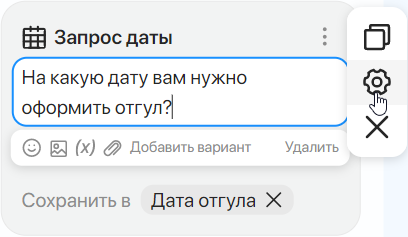
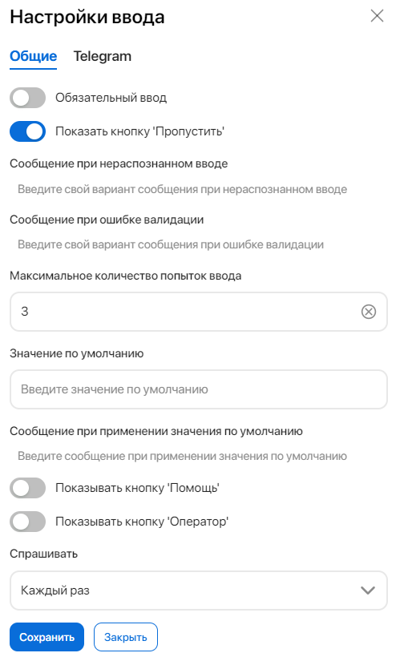
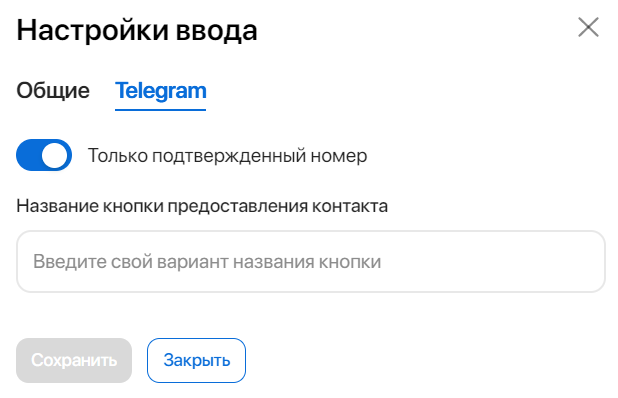

Элементы из этой группы позволяют запросить у пользователя информацию определённого типа. Например, бот может уточнить дату, на которую сотрудник хочет оформить отгул. Ответ пользователя будет проверяться на соответствие формата. Если он введёт несоответствующую информацию, например, напишет дату в виде текста, бот запросит данные ещё раз.
В группу Запрос данных входят элементы:
- Дата/Время;
- Телефон;
- Email;
- Число;
- Ссылка;
- Местоположение;
- ФИО;
- Вопрос Да/Нет;
- Файл.
Настроить элемент
Добавьте элемент в редакторе и укажите текст запроса, который увидит пользователь. Можно использовать смайлы (), изображения (), переменные ( ) и файлы ().
) и файлы ().

Вы можете создать несколько альтернативных вариантов текста вопроса. В диалоге бот будет случайным образом будет выбирать одну из фраз, заданную в элементе, и выводить её пользователю. Для этого выделите блок с текстом и нажмите Добавить вариант. Чтобы убрать вариант, нажмите Удалить.
Записать ответ пользователя в переменную
Чтобы завершить настройку элемента, вам необходимо указать переменную, в которую сохранится ответ пользователя. Для этого в поле Ответ пользователя нажмите Добавить, а затем +Создать новую переменную.
Бот будет запоминать информацию от пользователя и сможет ссылаться на неё при дальнейшем взаимодействии.
Обратите внимание, тип переменной должен совпадать с типом запроса. Например, для записи фамилии руководителя нужно создать переменную типа ФИО, для запроса номера паспорта — добавить переменную Число и т. д. Для элементов Телефон, Email, Ссылка, Местоположение используются переменные типа Текст.
Все переменные сохраняются внутри сценария. Вы можете просматривать список используемых в сценарии переменных и изменять их настройки.
Подробнее об этом читайте в статье «Настройка переменных бота».
Копировать и удалить элемент
Добавленный в сценарий элемент можно скопировать () или удалить (). Для этого нажмите на элемент или наведите на него курсор, затем наведите курсор на три точки и выберите нужную опцию.
Настройки ввода
Для элементов из группы Запрос данных доступны Настройки ввода. Наведите курсор на элемент, а затем на появившиеся рядом с его названием три точки и выберите значок шестерёнки. В открывшемся окне вы можете настроить дополнительные опции.
Обратите внимание, в зависимости от выбранного элемента перечень вкладок и полей в окне настройки может различаться. Ниже приведено описание всех доступных настроек для элементов группы Запрос данных.
Вкладка «Общие»

- Режим ввода файлов — поле отображается при настройке элемента Запрос файла. Укажите количество файлов, которое сможет загрузить пользователь при беседе с ботом. Для выбора доступны значения: Один файл, Несколько файлов, Несколько файлов с подтверждением загрузки;
- Обязательный ввод — если опция активна, сценарий приостанавливается до тех пор, пока пользователь не выберет кнопку с ответом или не укажет нужные данные вручную;
- Показать кнопку ‘Отмена’ — опция доступна, если параметр Обязательный ввод активен. В диалоге с пользователем будет отображаться кнопка, которая отменяет запрос данных. При отмене сработает триггер завершения, и выполнение сценария прервётся;
- Показать кнопку ‘Пропустить’ — доступно, если параметр Обязательный ввод выключен. В чате с пользователем будет отображаться кнопка, которая позволяет пропустить ввод запрашиваемой информации и перейти к следующему шагу сценария;
- Сообщение при нераспознанном вводе — введите текст сообщения, которое увидит пользователь в чате, если даст ответ, не совпадающий с запрошенным форматом данных. Например, если бот запрашивает ответ в виде числа, и пользователь вводит буквы, а не цифры. Если данное поле не заполнено, при нераспознанном вводе бот повторит первоначальный запрос;
- Сообщение при ошибке валидации — введите текст сообщения, которое увидит пользователь, если его ответ не удовлетворяет наложенным на переменную ограничениям или не проходит проверку, созданную в обработчике событий. О том, какие методы можно использовать при создании валидации в обработчике, читайте в справке «Документация разработчика ELMA Bot». Поле не отображается при настройке элемента Запрос файла;
- Максимальное количество попыток ввода — если ответ пользователя не подходит под установленный формат данных или ограничения переменной, бот будет повторять запрос указанное количество раз — по умолчанию три. Если включена опция Обязательный ввод, после заданного числа повторов сценарий будет прерван. Если опция отключена, сценарий продолжится, но в переменную ничего не запишется;
- Значение по умолчанию — укажите значение, которое запишется в переменную, если пользователь не смог дать корректный ответ за установленное количество попыток ввода. При первичной настройке сценария введите значение, которое будет по умолчанию действовать для всех добавляемых элементов. Если вы хотите изменить его, установите новое значение для каждого элемента сценария отдельно. Поле не отображается при настройке элемента Запрос даты и Запрос файла;
- Сообщение при применении значения по умолчанию — введите текст сообщения, которое увидит пользователь при записи в переменную значения по умолчанию. Поле не отображается при настройке элемента Запрос даты и Запрос файла;
- Показывать кнопку ‘Помощь’ — в диалоге будет отображаться кнопка, нажав на которую пользователь увидит сообщение с подсказкой от бота;
- Сообщение при запросе помощи — введите текст подсказки, которую увидит пользователь. Например, укажите формат ввода данных или переформулируйте первоначальный запрос. Поле появляется, если включена опция Показывать кнопку ‘Помощь’;
- Показывать кнопку ‘Оператор’ — в окне чата будет отображаться кнопка, при нажатии на которую произойдёт перевод беседы на оператора;
- Спрашивать — укажите, в каком случае бот будет запрашивать ввод данных:
- Каждый раз — бот будет делать запрос каждый раз, как сценарий дойдёт до элемента группы Запрос данных;
- Только когда значение не заполнено — бот будет делать запрос только в случае, если переменная для ответа пользователя пуста.
Вкладка «Telegram»
Вкладка доступна только для элемента Запрос номера телефона и используется, если аккаунт мессенджера Telegram подключён напрямую к ELMA Bot, без настройки на стороне раздела Линии.
Параметры на этой вкладке позволят с помощью бота запросить номер телефона клиента в Telegram, получить согласие на его предоставление и обработать номер в ходе сценария.

- Только подтвержденный номер — включённая опция позволит боту запрашивать у пользователя Telegram его номер телефона;
- Название кнопки предоставления контакта — текст для кнопки, которая будет отображаться в чате с клиентом при запросе номера телефона.